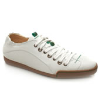

jQZoom allows you to realize a small magnifier window close to the image or images on your web page easily.
I decided to build this jQuery plugin to embed detailed big images in my B2B.So now in few steps you can have your jQZoom in your website,eCommerce or whatever you want.Author: Ing. Renzi Marco ,December 20071)Simply include the jqzoom.css in your page.
2)Include jQzoom and jQuery code
3)Now create a container(div is better!!) for the image or images you would like to zoom and assign to it the "jqzoom" class.Specify for each image,the jqimg attribute,to wich you are going to assign the big image path.
4)Load the plugin at window load
You can also specify some options:
5)Sit and wait for people to tell you that what you have done is really cool!!!!:-)
Demo
Now move the mouse over the images.

Inside a container with position:relative